Pemandu Lokal Berlisensi Resmi
Dipandu oleh warga asli Kintamani yang bersertifikat resmi, paham setiap jengkal rute pendakian, serta ramah dan siap membantu mengabadikan foto-foto terbaik Anda.
KEUNGGULAN LAYANAN
Komitmen kami untuk memberikan petualangan pendakian yang paling aman, nyaman, dan berkesan.
Dipandu oleh warga asli Kintamani yang bersertifikat resmi, paham setiap jengkal rute pendakian, serta ramah dan siap membantu mengabadikan foto-foto terbaik Anda.
Mobil antar-jemput dan guide pendakian adalah khusus untuk Anda & rombongan saja. Tidak perlu terburu-buru atau menyesuaikan dengan ritme orang asing.
Seluruh tarif dihitung transparan via Kalkulator Harga. Tidak ada biaya tersembunyi (hidden fees) atau paksaan belanja saat perjalanan.
SUNRISE YANG LEBIH TENANG
Bukit Trunyan berada di tepi Danau Batur, Kintamani. Dengan ketinggian sekitar 1.800 mdpl dan tingkat kesulitan menengah, jalurnya lebih tenang dan tidak terlalu berat, namun tetap memberi pemandangan sunrise yang memukau.
Tiba di puncak sekitar 06.00 WITA, dengan Gunung Batur, Gunung Abang, dan Danau Batur terbentang di depan. Saat cuaca cerah, Gunung Rinjani dan Gunung Agung juga bisa terlihat.
Menyusuri area danau berkabut, hutan, dan bukit landai bersama pemandu privat, tanpa rombongan lain.
Tambahkan kunjungan Desa Trunyan dengan perahu dan pemandian air panas vulkanik, lalu sarapan di kafe dengan pemandangan setelah turun.
03.00–09.00 WITA
Private Car
Menengah
Di kafe pemandangan
Choose your date and group size to see your total price, then secure your private Trunyan Hill sunrise trek in a few steps.
Choose your preferred trekking date and number of participants.
We do not provide hotel pickup. Meet your guide directly at the meeting point.
Meeting point: Kintamani, Bangli, Bali. Our team will confirm the exact location via WhatsApp. Open in Google Maps
Price per person depends on group size (1, 2, 3, or 4+ guests). Hotel pickup is not included. Prices are estimates for the selected options.
Penjemputan privat di hotel atau vila. Waktu penjemputan menyesuaikan area akomodasi; tim akan mengonfirmasi detail melalui WhatsApp.
Bertemu pemandu untuk briefing dan pembagian senter, lalu berkendara sekitar 30 menit ke titik awal di Desa Trunyan.
Berjalan melewati area danau berkabut, hutan, dan perbukitan bersama pemandu privat.
Menikmati sunrise, camilan ringan, air minum, dan foto dengan pemandangan Gunung Batur, Gunung Abang, dan Danau Batur.
Turun bersama pemandu dan bertemu kembali dengan sopir di titik awal.
Sarapan di kafe dengan pemandangan, lalu diantar kembali ke hotel.
Tambahkan perahu ke Desa Trunyan dan pemandian air panas untuk paket yang lebih lengkap.
CLEAR & TRANSPARENT SERVICE
Periksa fasilitas yang sudah termasuk dan biaya yang menjadi tanggungan pribadi sebelum memulai petualangan Anda.
Sudah termasuk: Camilan ringan dan air minum di puncak disediakan oleh AWAN TREKKING sebagai bagian dari paket.
Moderate. You need a reasonable level of fitness, and it is not suitable for pregnant women.
You meet at 02:30, start trekking around 03:00, reach the summit around 06:00, and finish around 09:00, with breakfast around 09:30.
Sunrise over Mount Batur, Mount Abang, and Lake Batur. On clear days you may also see Mount Rinjani and Mount Agung. Views are not guaranteed in fog or rain.
Yes. Only your group joins, with your own private guide.
Yes, as optional add-ons. Please bring swimwear if you choose the hot spring.
Light snacks and water at the summit are included. Breakfast at the view point cafe is not.
Make your Bali adventure even more memorable. Explore our other experiences and contact our team for package details and availability.
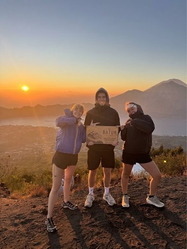
SUNRISE TREKKINGPrivate sunrise trek to the Mount Batur summit with a local guide and a volcanic steam breakfast.
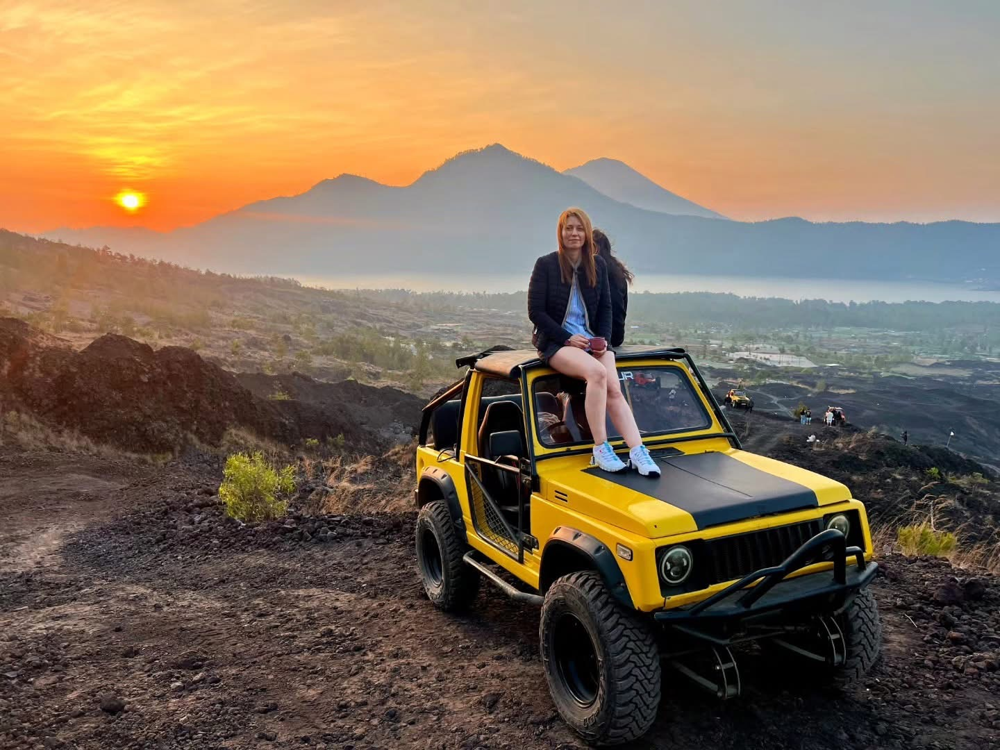
Jeep SunriseEnjoy Mount Batur sunrise from a 4x4 Jeep, with options for scenic volcanic stops.
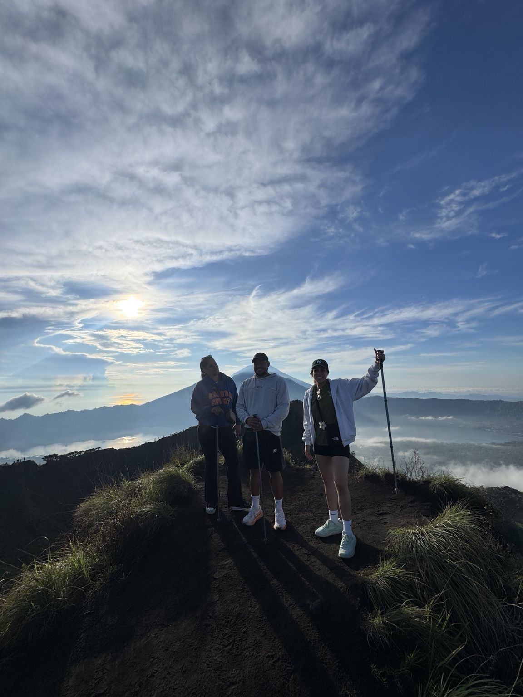
Daytime TrekkingExplore Mount Batur in daylight with volcanic scenery and a local trekking guide.
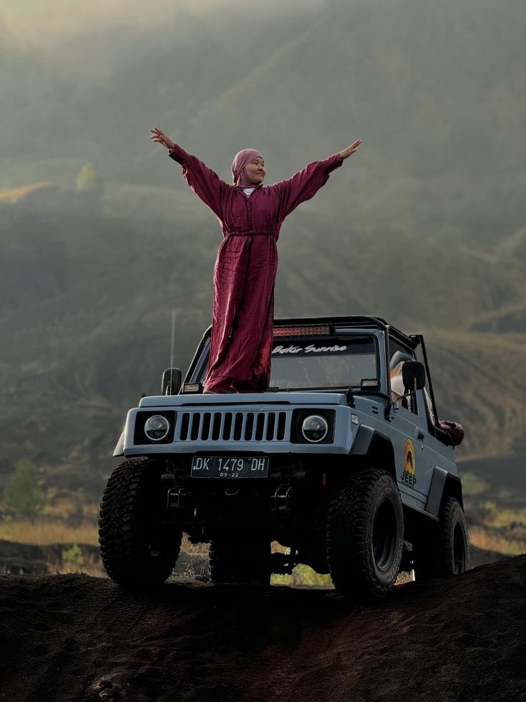
Jeep Day TripDiscover Mount Batur’s volcanic landscape on a scenic 4WD Jeep adventure.
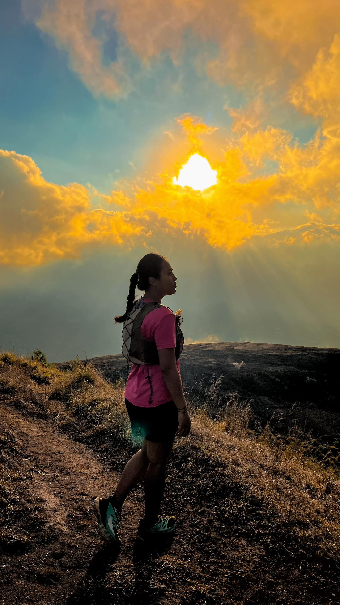
Sunset TrekkingEnjoy golden-hour views and a memorable Mount Batur sunset trek with a local guide.
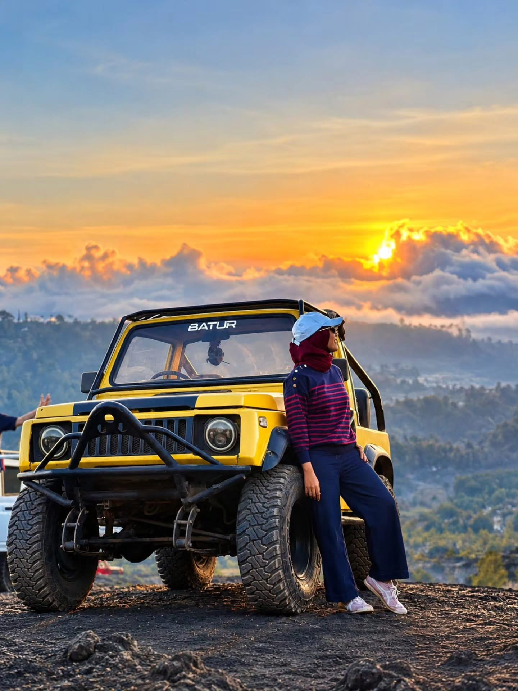
Sunset Jeep TourTake in Mount Batur’s sunset scenery by Jeep with a choice of volcanic routes.
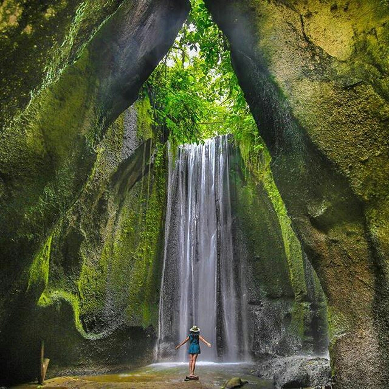
WATERFALL EXPEDITIONDiscover Bali’s beautiful waterfalls with private transport and an experienced local guide.
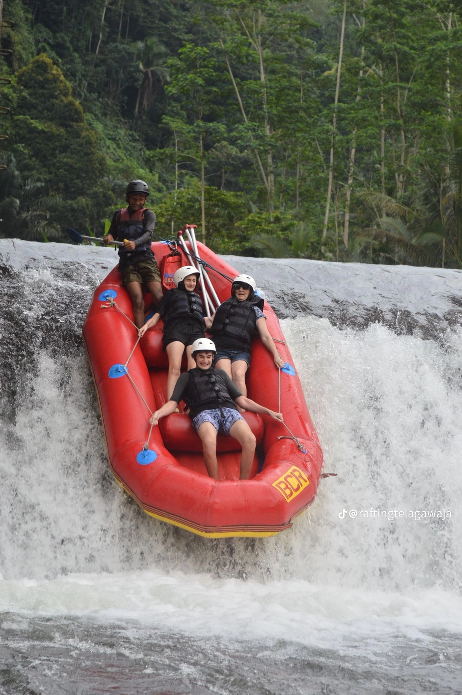
WHITE WATER RAFTINGEnjoy an exciting river rafting adventure surrounded by Bali’s tropical scenery.
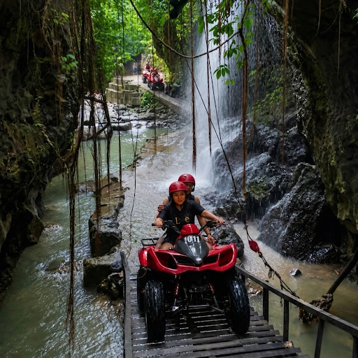
QUAD BIKE ATVRide through jungle tracks, muddy trails and exciting off-road scenery on an ATV.
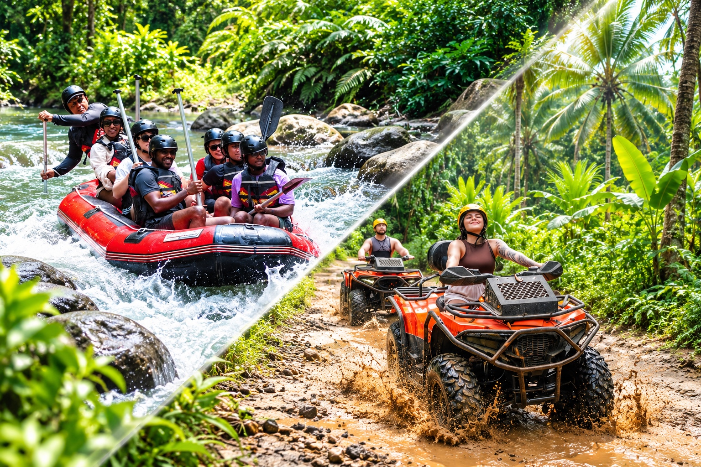
ATV + RAFTINGCombine an off-road ATV ride with an exciting Ayung River rafting experience.
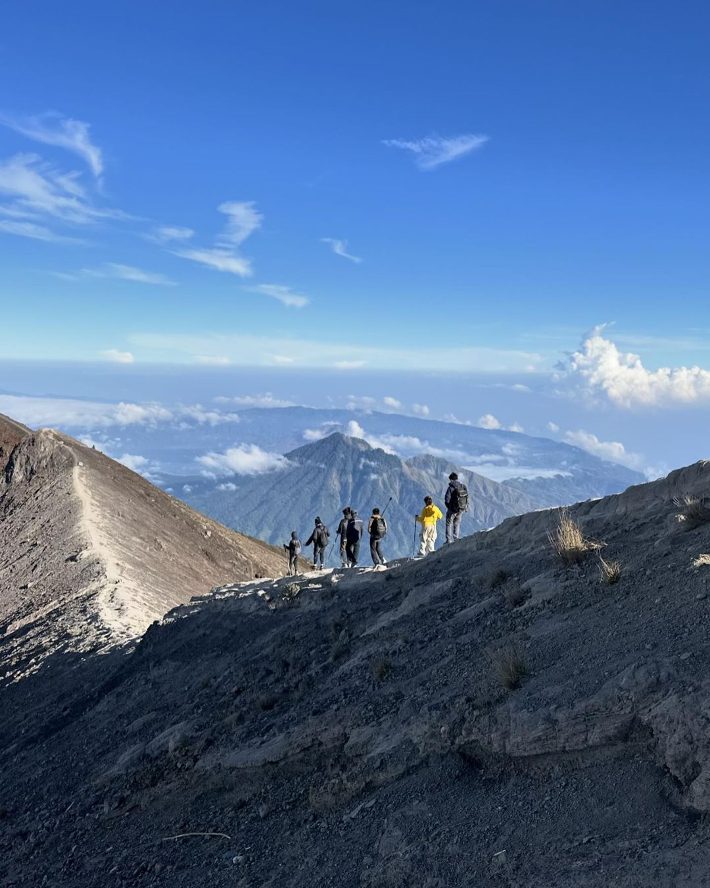
SUNRISE TREKKINGChallenge yourself with a Mount Agung sunrise trek and sweeping mountain views.
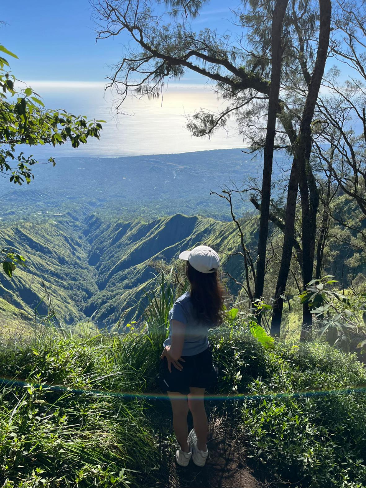
JUNGLE TREKKINGExplore Mount Abang’s peaceful forest trails and enjoy beautiful highland scenery.
YOUR EXPERIENCE MATTERS
Share your experience with AWAN TREKKING and help future adventurers plan their journey.
There are no guest reviews here yet. If you have joined one of our tours, you can share your feedback using the button below.
Reviews submitted here are saved in this browser on this device. They are not automatically sent to AWAN TREKKING or shared with other visitors.
Pilih opsi ini jika Anda datang sendiri ke titik kumpul. Briefing bersama pemandu dimulai pukul 02.30 WITA, lalu perjalanan sekitar 30 menit menuju titik awal di Desa Trunyan.
Kintamani, Kabupaten Bangli, Bali. Lokasi titik kumpul yang tepat dikonfirmasi tim AWAN TREKKING melalui WhatsApp.
Get Directions – Google MapsPilih layanan ini jika Anda ingin dijemput langsung dari hotel atau vila menggunakan mobil privat, lalu diantar ke titik awal pendakian.
Antar-jemput sudah termasuk untuk area utama (Nusa Dua, Jimbaran, Uluwatu, Kuta, Legian, Seminyak, Canggu, Sanur, Ubud). Biaya tambahan untuk area terpencil dikonfirmasi tim. Nama hotel dan alamat penjemputan diminta saat mengisi formulir pemesanan.
Detail penjemputan akan dikonfirmasi melalui WhatsApp sehari sebelum aktivitas.
Choose Hotel Pick-UpTips: Karena briefing dimulai pukul 02.30 WITA, pilih Meeting Point jika Anda menginap dekat Kintamani atau membawa kendaraan sendiri. Jika membutuhkan mobil penjemputan dari hotel atau vila, pilih Hotel Pick-Up.
Enjoy a private sunrise trek above Lake Batur with your own guide. Choose your package, date, and number of participants to review your estimated total before booking.
Have questions about trekking preparation, hotel pick-up, group bookings, or a customized tour? Message our team on WhatsApp and we’ll help you plan your experience.
Halaman khusus pemesanan. Periksa ringkasan pilihan Anda, lalu lengkapi data diri untuk menyiapkan pesanan.